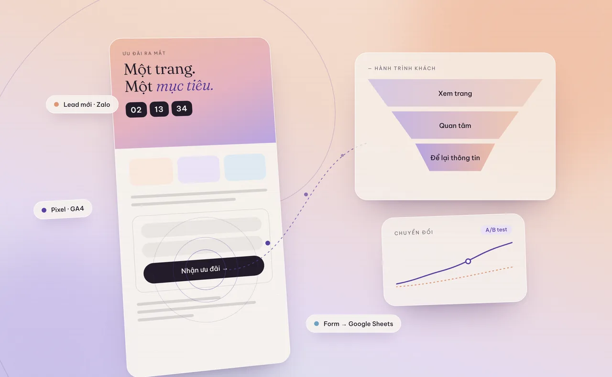

Landing Page
Landing page chạy quảng cáo Facebook, TikTok: làm sao cho khớp từng nền tảng
Khách bấm quảng cáo Facebook hay TikTok đều mở trang trên điện thoại, ngay trong ứng dụng, với vài giây chú ý. Bài này chỉ cách làm landing page hợp với từng nền tảng, đo được nguồn khách và cải thiện dần bằng số liệu thật.

Một cửa hàng mỹ phẩm online chạy cùng lúc quảng cáo Facebook và TikTok, cả hai đều trỏ về trang chủ website. Lượt bấm nhiều, nhưng tin nhắn hỏi mua ít, và không ai biết khách đến từ quảng cáo nào. Đây là tình huống rất phổ biến: tiền quảng cáo đã trả cho lượt bấm, còn phần sau lượt bấm thì bị bỏ ngỏ.
Landing page chạy quảng cáo giải quyết đúng phần đó: một trang viết riêng cho người vừa bấm, tải nhanh trong trình duyệt của ứng dụng, có đo lường để biết quảng cáo nào ra khách. Bài thiết kế landing page bán hàng chuyển đổi cao đã nói về cấu trúc từng khối nội dung; bài này tập trung vào phần riêng khi trang đi cùng quảng cáo Facebook và TikTok.
Khớp thông điệp giữa quảng cáo và trang
Khách bấm vì một câu, một hình, một ưu đãi cụ thể trong quảng cáo. Màn hình đầu tiên của trang phải xác nhận ngay rằng họ đã đến đúng chỗ: cùng lời hứa, cùng hình sản phẩm, cùng con số ưu đãi. Nếu quảng cáo nói "mua 2 tặng 1 serum dưỡng ẩm" mà trang mở đầu bằng câu chuyện thương hiệu, khách sẽ thoát trước khi kéo xuống.
Một trang cho mỗi chiến dịch hoặc nhóm khách
Khi bạn chạy nhiều thông điệp cho nhiều nhóm khách, ví dụ một nhóm quan tâm giá, một nhóm quan tâm thành phần, đừng dồn tất cả về một trang. Mỗi chiến dịch hoặc nhóm khách chính nên có trang riêng, hoặc ít nhất một phiên bản tiêu đề và ảnh đầu trang riêng. Cách làm thực tế là dựng một khung trang chung, rồi nhân bản và đổi phần đầu cho từng nhóm. Chi phí thêm không nhiều, mà mỗi nhóm khách đều thấy trang nói đúng điều họ quan tâm.
Giữ lời hứa thật
Ưu đãi, thời hạn, số lượng trên trang phải đúng với thực tế và đúng với quảng cáo. Đồng hồ đếm ngược chỉ dùng khi hạn chót có thật. Trang nói một đằng, chốt đơn một nẻo thì khách mất lòng tin, và nền tảng quảng cáo cũng có thể xem đó là nội dung gây hiểu lầm.
Thiết kế cho trình duyệt bên trong ứng dụng
Phần lớn khách bấm quảng cáo từ điện thoại, và trang thường mở trong trình duyệt tích hợp của ứng dụng Facebook hay TikTok, không phải Chrome hay Safari. Điều này kéo theo vài yêu cầu riêng:
- Trang thật nhẹ. Khách đang lướt nhanh, chưa có thói quen chờ. Ảnh nén ở định dạng WebP, hạn chế video tự phát ở đầu trang, bớt mã theo dõi và plugin không cần thiết.
- Nút gọi, nút Zalo dễ bấm. Nút lớn, đặt ở tầm ngón cái, có thể ghim ở cạnh dưới màn hình. Hãy thử bấm nút Zalo từ trong ứng dụng Facebook và TikTok trên cả iPhone lẫn Android, vì cách trình duyệt trong app mở ứng dụng khác không phải lúc nào cũng giống nhau.
- Form ngắn. Gõ phím trong trình duyệt app khá bất tiện. Chỉ hỏi tên và số điện thoại, để bàn phím số tự hiện khi nhập số, thêm lựa chọn có sẵn thay vì bắt khách gõ.
- Chữ đọc được ngay. Cỡ chữ đủ lớn, đoạn ngắn, tương phản rõ. Khách không phóng to màn hình để đọc quảng cáo.
- Không phụ thuộc đăng nhập. Khách thường chưa đăng nhập gì trong trình duyệt app, nên đừng yêu cầu tài khoản hay đăng nhập mạng xã hội để xem ưu đãi.
Facebook và TikTok khác nhau thế nào
Cùng là quảng cáo trên điện thoại, nhưng tâm thế người xem trên hai nền tảng thường khác nhau. Bảng dưới đây là xu hướng chung để bạn bắt đầu, không phải quy luật; số liệu từ chính chiến dịch của bạn mới là thứ quyết định.
| Tiêu chí | TikTok | |
|---|---|---|
| Dạng quảng cáo | Ảnh, video, bài viết trong bảng tin | Video dọc toàn màn hình |
| Tâm thế người xem | Sẵn sàng đọc, so sánh hơn | Lướt nhanh, theo cảm hứng |
| Màn hình đầu | Tiêu đề khớp quảng cáo, ảnh rõ | Nối tiếp video: cùng hình, cùng câu nói |
| Độ dài trang | Có thể dài hơn cho sản phẩm cần cân nhắc | Ngắn, vào thẳng ưu đãi |
| Bằng chứng | Ảnh thật, chính sách, câu hỏi thường gặp | Video ngắn sử dụng thật |
| Mã đo lường | Meta Pixel | TikTok Pixel |
Với TikTok, trang nên tạo cảm giác như phần tiếp theo của video: cùng tông màu, cùng người xuất hiện, cùng câu nói chốt. Video quảng cáo và trang đích nên được lên ý tưởng cùng lúc. Nếu bạn đang chuẩn bị nội dung video, bài edit video TikTok, Reels bán hàng có thêm gợi ý cho phần này.
Gắn pixel, sự kiện chuyển đổi và UTM
Pixel và sự kiện
Mỗi nền tảng có mã đo lường riêng: Meta Pixel cho Facebook và Instagram, TikTok Pixel cho TikTok. Gắn mã thôi chưa đủ, cần đặt sự kiện cho hành động chính như gửi form, bấm gọi, bấm Zalo. Khi sự kiện ghi nhận đúng, bạn có thể tối ưu quảng cáo theo người để lại thông tin, không chỉ theo lượt bấm. Các nền tảng cũng có cách gửi sự kiện từ máy chủ để đo ổn định hơn; phần này nên làm khi ngân sách và lượng khách đủ lớn.
Việc thu thập dữ liệu người dùng và nội dung trang đích đều phải tuân thủ chính sách quảng cáo của từng nền tảng cũng như quy định về dữ liệu cá nhân. Chính sách thay đổi theo thời gian và theo ngành hàng, nên hãy đọc bản hiện hành của nền tảng bạn dùng, và hỏi người có chuyên môn với ngành nhạy cảm như y tế, tài chính, thực phẩm chức năng.
UTM để biết khách đến từ đâu
UTM là các tham số gắn vào cuối đường dẫn, ví dụ utm_source=tiktok&utm_campaign=serum-thang-12. Nhờ đó Google Analytics và bảng lead biết mỗi khách đến từ nền tảng nào, chiến dịch nào, mẫu quảng cáo nào. Hãy thống nhất một quy tắc đặt tên từ đầu, viết thường, không dấu, và ghi lại trong một bảng chung để cả đội dùng giống nhau.
Lead về đâu, ai xử lý
Form nên đổ về Google Sheets kèm nguồn UTM, đồng thời báo ngay cho người phụ trách qua Zalo hoặc email. Khách để lại số lúc tối mà sáng hôm sau mới có người gọi thì nhiều khả năng họ đã quên quảng cáo. Nếu muốn trả lời tự động ngoài giờ, xem bài tự động trả lời khách trên Zalo OA, Facebook.
Thử A/B và cải thiện theo số liệu
- Chạy ổn định trước. Đợi trang có đủ lượt truy cập và sự kiện ghi nhận đúng rồi mới thử.
- Mỗi lần đổi một điều lớn. Tiêu đề, ảnh đầu trang hoặc ưu đãi. Đổi nhiều thứ cùng lúc thì không biết thứ nào tạo khác biệt.
- So theo từng nền tảng. Phiên bản thắng trên Facebook chưa chắc thắng trên TikTok. Dùng UTM để tách số liệu.
- Nhìn cả chất lượng lead. Phiên bản nhiều lượt điền hơn nhưng ít người nghe máy chưa chắc tốt hơn. Hỏi đội bán hàng tỷ lệ chốt của từng nguồn.
Sai lầm hay gặp khi chạy quảng cáo về landing page
- Dùng chung một trang cho mọi chiến dịch, mọi nền tảng.
- Chỉ thử trang trên máy tính văn phòng, không mở thử từ trong ứng dụng Facebook, TikTok bằng mạng di động.
- Gắn pixel nhưng không kiểm tra sự kiện có ghi nhận không.
- Không gắn UTM, cuối tháng chỉ biết tổng số lead.
- Viết cam kết hiệu quả, hình trước và sau, lời khen không có thật: dễ bị từ chối quảng cáo và mất uy tín.
Chi phí làm landing page chạy quảng cáo
Tại Dream Labs, gói Cơ bản 3.000.000đ gồm 1 trang 6 đến 8 khối nội dung, form thu lead về Google Sheets, gắn Facebook Pixel và GA4, hợp khi bạn đã có nội dung và cần trang đích đo được để chạy ngay. Gói Chuyên nghiệp 6.000.000đ thiết kế riêng 10 đến 12 khối, có viết nội dung bán hàng, đếm ngược ưu đãi và báo lead qua Zalo hoặc email. Gói Cao cấp 12.000.000đ có 2 phiên bản để A/B test, báo cáo chuyển đổi hằng tuần và tối ưu lại sau 30 ngày. Chi phí quảng cáo trả cho nền tảng không nằm trong giá này.
| Gói | Giá | Thời gian | Bao gồm |
|---|---|---|---|
| Cơ bản | 3.000.000đ | 3–5 ngày4 vòng sửa | Có ngay trang đích để chạy quảng cáo và biết mỗi khách tiềm năng đến từ đâu.
|
| Chuyên nghiệpPhổ biến nhất | 6.000.000đ | 5–7 ngày9 vòng sửa | Nội dung bán hàng viết sẵn, khách để lại số được báo về Zalo để gọi lại khi còn nóng: tận dụng tốt hơn từng đồng quảng cáo.
|
| Cao cấp | 12.000.000đ | 7–10 ngày18 vòng sửa | Quyết định bằng số liệu thật: thử hai phiên bản, theo dõi hằng tuần, tối ưu lại sau 30 ngày.
|
Xem thêm trang landing page chạy quảng cáo Facebook, các trang mẫu tại mẫu landing page, hoặc trang dịch vụ thiết kế landing page và bảng giá đầy đủ. Nếu bạn sắp chạy chiến dịch, hãy nhắn Zalo 0934 246 420 kèm mẫu quảng cáo và ngày chạy.
Câu hỏi thường gặp
Có nên dùng chung một landing page cho Facebook và TikTok không?
Có thể dùng chung khung trang để tiết kiệm, nhưng nên có phần đầu trang riêng khớp với quảng cáo của từng nền tảng, và luôn gắn UTM khác nhau để so sánh được kết quả.
Landing page chạy TikTok cần gắn mã gì?
Cần gắn TikTok Pixel và đặt sự kiện cho hành động chính như gửi form hoặc bấm liên hệ. Nên gắn thêm Google Analytics và UTM để xem số liệu của mọi nguồn ở cùng một nơi.
Vì sao trang mở nhanh trên máy tính mà chậm khi bấm từ quảng cáo?
Khách mở trang bằng điện thoại, trong trình duyệt của ứng dụng, thường qua mạng di động. Ảnh nặng, video tự phát và nhiều mã theo dõi làm trang chậm rõ rệt trong điều kiện đó, nên cần kiểm tra trên điện thoại thật.
Chạy quảng cáo tin nhắn thì có cần landing page nữa không?
Không bắt buộc. Quảng cáo tin nhắn hợp với sản phẩm cần hỏi đáp và khi có người hoặc trợ lý AI trực inbox. Landing page hợp khi khách cần đọc, xem hình, so sánh trước khi để lại thông tin. Nhiều doanh nghiệp chạy song song để so.
Làm landing page mất bao lâu?
Tại Dream Labs, gói Cơ bản mất 3 đến 5 ngày, gói Chuyên nghiệp 5 đến 7 ngày, gói Cao cấp 7 đến 10 ngày, tính từ khi có đủ thông tin sản phẩm, ưu đãi và mẫu quảng cáo.
Bắt đầu cùng Dream Labs
Sắp chạy quảng cáo Facebook hoặc TikTok?
Gửi Dream Labs mẫu quảng cáo, sản phẩm và ưu đãi. Chúng tôi đề xuất cấu trúc trang khớp với từng nền tảng, gắn sẵn đo lường để bạn biết khách đến từ đâu.